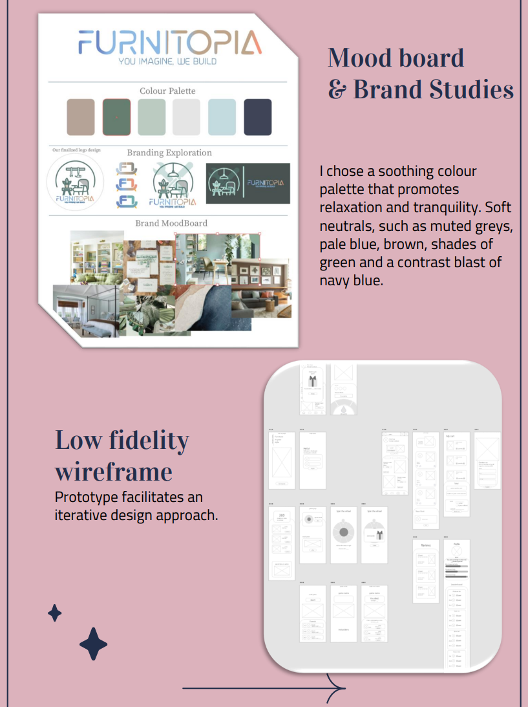

Click on the images below:
FURNITOPIA App Design. Oct 2022.
Designed in Adobe XD.
I present a design process and user experience considerations for an e-commerce furniture store mobile app. The goal of the app is to provide a seamless and enjoyable shopping experience for users looking to purchase furniture items.
I conducted market research with over 50 participants across different groups, analyzed competitors like IKEA and Amazon Home, created user personas, mapped user flows, designed wireframes, built interactive prototypes, conducted usability testing, and refined the design through multiple iterations before finalizing the high-fidelity mockups.